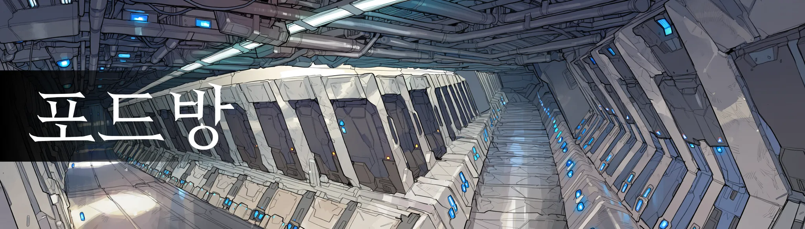
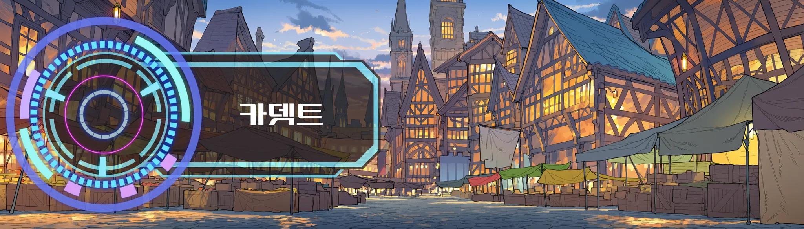
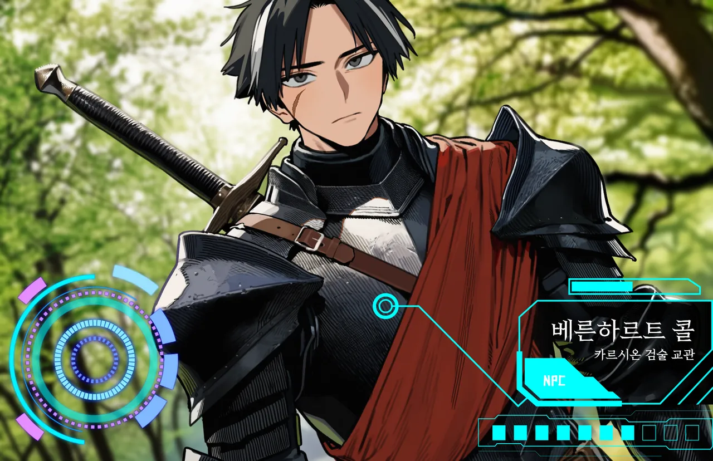
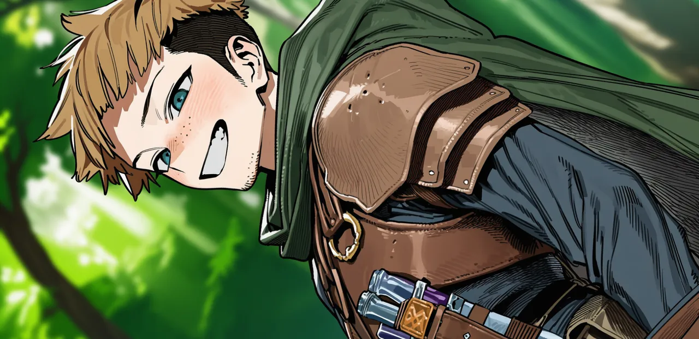
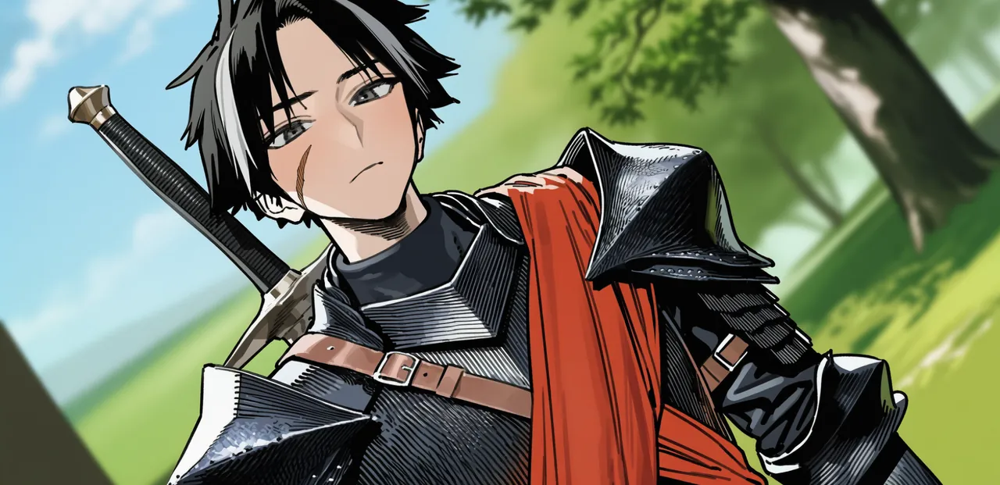
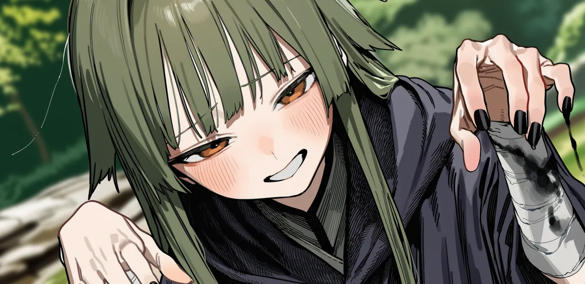
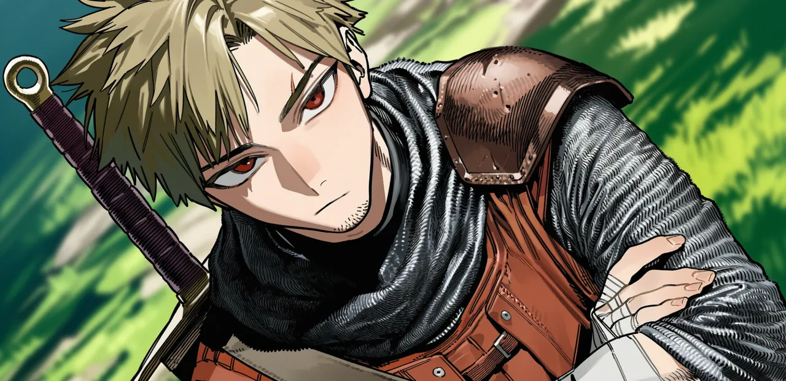
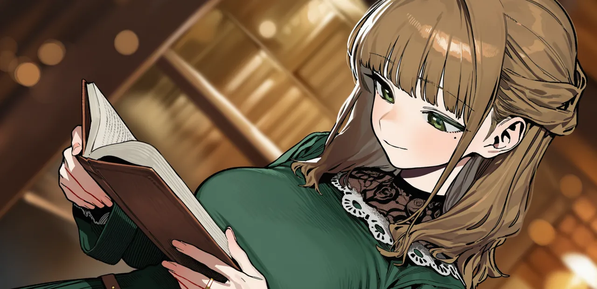
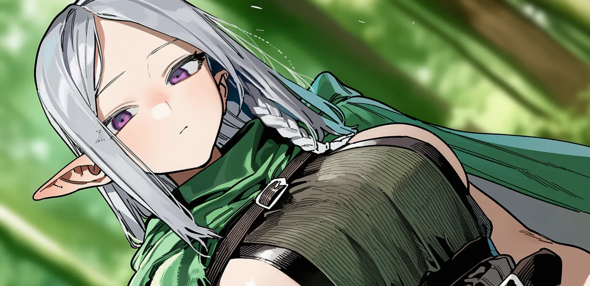
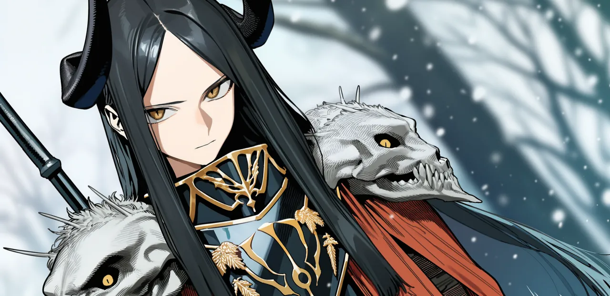

벨라트 대륙여명기 이후 800년. 고대 마법 문명이 무너진 땅에, 죽어도 돌아오는 자들이 내려섰다.
[월드]라흐나 제3환 · 아직 돌파한 이방인이 없습니다.
[히든]잔영귀 · 전설 · 서버 로그에는 직업명만 공개됩니다.
[랭킹]1위 줄리엣 · Lv64 월광검사
[히든]잿말잡이 · 일반 · 히든직이라고 다 좋은 건 아닙니다.
[정세]북부 국경 · 카르시온과 하르덴, 전면전에 가장 가까운 선
[월드]신화 등급 보유자 · 서비스 이래 0명
[정세]칼데스 · 이방인 축출을 명분으로 한 원정
[월드]3차 전직자 · 서버 전체 5명

몸은 여기,
포드 안에.
2047년 대한민국. 월정액과 할부, 전기세와 정비비를 내고 다이브포드에 눕는다. 로그아웃하면 저린 다리와 커뮤의 여론이 기다린다.
현실 시각--:--

나는 저기,
대륙 위에.
제국 하나, 왕국 셋, 자유도시와 무법 지대와 엘프의 숲. 로그아웃해 있는 동안에도 대륙의 시간은 똑같이 흐른다.
벨라트 시각--:--
시간비 4 : 1 — 현실 6시간이 게임 하루. 위의 두 시계는 그 비율로 함께 갑니다.

“죽어도 돌아오는 자에게 검을 가르치는 건 삽을 쥐여주는 것과 다르지 않다.”카르시온 검술 교관
- [이방인]플레이어. 죽으면 레벨이 깎이고 귀환석에서 돌아온다.
- [원주민]대륙에 사는 사람들. 죽으면 끝이다. 등록된 인물도 예외가 없다.
- [전쟁]원주민 군대는 이방인을 '돌아오는 병력'으로 쓴다. 같은 참호에서 한쪽만 돌아온다.
접속 중인 열다섯 사람
이방인 다섯, 원주민 열. 각자 자기 사정으로 움직이고, 당신보다 먼저 움직인다.














메인 스토리는 없다.
일어난 일이 스토리가 된다.
정세가 끓다가 터지면 사변이 된다. 전쟁, 침공, 재해, 정변. 함락된 마을은 폐허로 남고, 국경은 바뀌고, 죽은 원주민은 돌아오지 않는다. 공략 위키는 늘 반 박자 늦는다.
- 전조
공지 없이 흔적으로만. NPC 말투가 바뀌고, 물자를 사재기하고, 시세가 튀고, 피난민이 보이고, 커뮤에 목격담이 뜬다.
- 발발
대륙 공지, 징집령, 통행 봉쇄. 퀘스트가 한꺼번에 쏟아진다.
- 국면
전선과 거점 단위로 진행된다. 이방인 한 명이 거점 하나는 뒤집어도, 전쟁 전체를 혼자 바꾸지는 못한다.
- 결착
승리, 패배, 교착, 부분 승리. 이쪽이 이긴다는 보장은 없다.
- 여파
국경, 영지, 마을, 원주민의 생사, 사냥터 레벨대, 시세가 영구히 바뀐다. 큰 사변은 기록으로 남는다.
어디서 눈을 뜰까
시작 모드는 셋. 처음 내려서는 뉴비, 서버 최초의 신화 직업, 그리고 아무것도 정하지 않은 자유 모드.